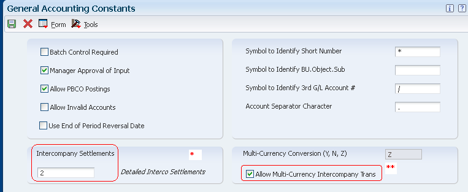
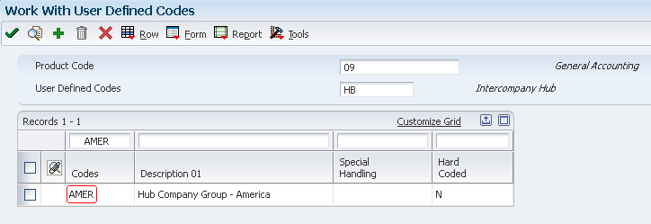

| Purpose |
| Overview |
| Scope |
| Details |
| Setup |
| Intercompany Settlements Constant (P0000) |
| Offset Method (P0000) |
| Intercompany Settlement Accounts (P0901) |
| Intercompany Settlement AAIs (P0012) |
| Setting Up Companies in Address Book |
| Setting up Ledger Types (P0025) |
| Configured Hub Setup |
| Intercompany Settlements Methods |
| Hub Method |
| Overview |
| Examples |
| Detail Method |
| Overview |
| Examples |
| Configured Hub Method |
| Overview |
| Examples |
| Error Messages |
| Frequently Asked Questions |
Intercompany settlements ensure that each company’s net balance equals zero i.e. debits equal credits. If your business enters transactions between companies, the companies will be out of balance unless you create and post intercompany balancing entries. You can either create these settlements yourself or choose a method of intercompany settlements to use and have the system create them automatically. You can select one of the following intercompany settlement methods to use:
When you post transactions using one of these methods, the system creates journal entries for intercompany settlements based on automatic accounting instructions (AAIs). The system tracks the transaction settlements through subledgers. Each company that is involved in an intercompany settlement has an automatic offset to the appropriate intercompany account with the subledger equal to the address book number of the offsetting company. The system uses the subledger field to record the other company that is involved in the transaction.
Example: A typical intercompany transaction between Companies 00001 (1.1110) and 91009 (91009.1105) will look like as follows:
| Company | Account Number | Document Type | Subledger | Subledger Type | Amount |
|---|---|---|---|---|---|
| 00001 | 1.1110 | JE | -100.00 | ||
| 91009 | 91009.1105 | JE | 100.00 | ||
| 00001 | 1.1291 | AE | 00091009 | A | 100.00 |
| 91009 | 91009.1291 | AE | 00000001 | A | -100.00 |
This document is intended for Finance Functional users who will be involved in setting up of General Accounting Constants in the General Accounting system.
Setup the Intercompany Settlements field in the General Accounting Constants (P0000) to specify the method that the system uses to automatically create journal entries between companies within an organization.

* Valid values that can be setup for Intercompany Settlements are as follows:
The intercompany settlement method that you specify in the General Accounting Constants program must be compatible with the offset method specified in the Accounts Receivable Constants and Accounts Payable Constants programs. The offset entry method is the method that the system uses when posting vouchers, payments, invoices, receipts, and drafts to the Account Ledger table (F0911). If the methods are not compatible, the system issues an error message when you post transactions to the general ledger. Following table shows the intercompany settlement methods and their compatibility with the Accounts Receivable and Accounts Payable offset methods:
| Intercompany Settlement Methods | Offset Method B (one offset per batch) | Offset Method Y (one offset per transaction) | Offset Method S (one offset per pay item) |
|---|---|---|---|
| 1 - Hub | Compatible | Compatible | Compatible |
| 2 - Detail | Compatible | Compatible | Compatible |
| 2 - Detail (Multi-Currency) | Incompatible | Compatible | Compatible |
| 3 - Configured Hub | Incompatible | Compatible | Compatible |
| 3 - Configured Hub (Multi-Currency) | Incompatible | Compatible | Compatible |
Set up intercompany accounts using the Accounts by Object program (P0901). For the hub, detail, or configured hub method, set up one intercompany settlement account for each company. It is recommended that you use:
Example: Intercompany Accounts
Following example shows the recommended setup for each company and intercompany object account:
| Company | Accounts (BU.OBJ) | Posting Edit Code | Level Of Detail |
|---|---|---|---|
| 00001 | 1.1291 | M(machine only) | 6 |
| 00200 | 200.1291 | M(machine only) | 6 |
| 00050 | 50.1291 | M(machine only) | 6 |
After you set up the intercompany settlement accounts for each company, you can reference these accounts in the intercompany AAIs. Thus, the system knows the accounts for which to create balancing entries during the post. The two AAI items for intercompany settlements are ICCC and ICH. You use ICCC for all intercompany settlements. Additionally, you use ICH for the hub method.
Hub Method
For the hub method, it is required to setup both of the intercompany settlement AAIs - ICH and ICCC.
Detail and Configured Hub Methods
For the detail and configured hub methods, you setup only AAI item ICCC.
ICH (Intercompany Hub)
This item defines the hub company. Observe these guidelines when setting up AAI item ICH:
ICCC (Intercompany Business Unit)
This item defines the non-hub companies. Observe these guidelines when setting up AAI item ICCC:
Example: AAIs for the Hub Method
This example shows the AAI items ICH and ICCC with Hub Company designated as base company 00000:
| AAI Item | Company | Business Unit (Required) | Object (Required) | Subsidiary (Optional) |
|---|---|---|---|---|
| ICH | 00000 | 1 | 1291 | |
| ICCC | 00200 | 200 | 1291 | |
| ICCC | 00050 | 50 | 1291 |
Example: AAIs for the Detail and Configured Hub Methods
This example shows the recommended AAI setup:
| AAI Item | Company | Business Unit (Required) | Object (Required) | Subsidiary (Optional) |
|---|---|---|---|---|
| ICCC | 00001 | 1 | 1291 | |
| ICCC | 00200 | 200 | 1291 | |
| ICCC | 00050 | 50 | 1291 |
For all three intercompany settlement methods, the system uses subledgers with subledger type A (address book) when creating intercompany settlement entries. Therefore, all companies in the F0010 table must be set up in the address book even those that do not use intercompany settlements.
Observe the following recommendations:
For example, assume that company number 50 has an address book number of 30 and you have not created a cross-reference between the two numbers. One of these situations may occur:
Select "Create Intercompany Settlements" check box if you want the system to create balancing entries when a transaction that involves multiple companies is entered for a particular ledger type. This check box works in conjunction with the intercompany settlement method on the General Accounting Constants form:
Before you can use configured hubs to settle intercompany transactions, you must set up the configured hub relationships for your organization. The system uses these relationships to process intercompany settlements.
Setup UDC 09/HB
You must set up the name of each configured hub in UDC table 09/HB. Each name can be up to six characters in length. Configured hub names do not have to be actual company names in your organization. For example, set up UDC code AMER to represent a hub for companies in America. The description might be Hub Company Group - America.

Designate Hub/Member Companies (P09190)
For each company that exists in the Company Constants table (F0010), you must designate the company as either the hub company or a member company of the hub in the Configured Hub Companies program (P09190). The system maintains configured hub information in the F09190 table.
* Hub Designator - This flag indicates the status of a company in a user defined hub.
Guidelines for Configured Hubs
It is recommended to observe the following guidelines for configured hubs:
If you do not designate a company as the hub company, observe these guidelines:
When you choose the hub method, the system creates summarized journal entries for your intercompany settlements by Batch Number and GL Date between a designated hub company and related subsidiary companies.
Consider the following information used for demonstrating three different examples of how the system creates the automatic entries for intercompany settlements using the hub method:
Example 1: Journal Entry Between Two Companies
This example shows the entries that the system creates when you enter a journal entry between two companies. In this example, company 00200 accrues a liability incurred by company 00050 and accounts for these companies are cleared through the designated hub company 00001. You enter the following information for the journal entry:
| Document | Company | Account | Description | Debit | Credit |
|---|---|---|---|---|---|
| JE 1000 | 00050 | 50.8150 | Expenses | 500 | |
| JE 1000 | 00200 | 200.4110 | Accounts Payable | 500 |
When you post the journal entry, the system automatically generates these intercompany entries:
| Document | Company | Account/Subledger Value/Type | Description | Debit | Credit |
|---|---|---|---|---|---|
| AE 1212 | 00050 | 50.1291/00000001/A | Intercompany Receivables/Payables | 500 | |
| AE 1212 | 00001 | 1.1291/00000050/A | Intercompany Receivables/Payables | 500 | |
| AE 1212 | 00020 | 200.1291/0000001/A | Intercompany Receivables/Payables | 500 | |
| AE 1212 | 00001 | 1.1291/00000200/A | Intercompany Receivables/Payables | 500 |
The second and fourth rows are entries to the hub company 00001 from companies 00050 and 00200.
Example 2: Journal Entry Among Three Companies
This example shows the entries that the system creates when you enter a journal entry among three companies. In this example, company 00200 accrues liabilities incurred by companies 00050 and 00060 and accounts for these companies are cleared through the hub company 1. You enter one journal entry that involves more than two accounts, but does not involve the hub company:
| Document | Company | Account | Description | Debit | Credit |
|---|---|---|---|---|---|
| JE 2000 | 00050 | 50.8150 | Expenses | 300 | |
| JE 2000 | 00060 | 60.1800 | Prepaid Expenses | 200 | |
| JE 2000 | 00200 | 200.4110 | Accounts Payable | 500 |
When you post the journal entry, the system automatically generates these intercompany entries:
| Document | Company | Account/Subledger Value/Type | Description | Debit | Credit |
|---|---|---|---|---|---|
| AE 1213 | 00060 | 60.1291/00000001/A | Intercompany Receivables/Payables | 200 | |
| AE 1213 | 00001 | 1.1291/00000060/A | Intercompany Receivables/Payables | 200 | |
| AE 1213 | 00050 | 50.1291/00000001/A | Intercompany Receivables/Payables | 300 | |
| AE 1213 | 00001 | 1.1291/00000050/A | Intercompany Receivables/Payables | 300 | |
| AE 1213 | 00200 | 200.1291/00000001/A | Intercompany Receivables/Payables | 500 | |
| AE 1213 | 00001 | 1.1291/00000200/A | Intercompany Receivables/Payables | 500 |
The second, fourth, and six rows are entries to the hub company 00001 from companies 00060, 00050, and 00200. Although the hub company 00001 is not in the original journal entry, all intercompany settlements are cleared through the hub company.
Example 3: Two Journal Entries in One Batch
This example shows how the system creates summarized entries when you enter two journal entries in one batch. In this example, company 00001 transfers cash to company 00060 and prepays an expense on behalf of company 00060. You enter two journal entries in one batch as follows:
| Document | Company | Account | Description | Debit | Credit |
|---|---|---|---|---|---|
| JE 3000 | 00001 | 1.1110.BEAR | Cash | 100 | |
| JE 3000 | 00060 | 60.1110 | Cash | 100 | |
| JE 4000 | 00001 | 1.1110.BEAR | Cash | 100 | |
| JE 4000 | 00060 | 60.1800 | Prepaid Expense | 100 |
When you post the journal entry, the system automatically generates these intercompany entries:
| Document | Company | Account/Subledger Value/Type | Description | Debit | Credit |
|---|---|---|---|---|---|
| AE 1214 | 00060 | 60.1291/00000001/A | Intercompany Receivables/Payables | 200 | |
| AE 1214 | 00001 | 1.1291/00000060/A | Intercompany Receivables/Payables | 200 |
The second row is the entry to the hub company 00001 from company 00060. The hub method summarizes the four lines of the two documents by account and by subledger and subledger type.
When you choose the detail method, the system creates detailed journal entries by document between companies, using the company on the first line of a transaction as the hub company. More features of detail method are as follows:
Consider the following information used for demonstrating three different examples of how the system creates the automatic entries for intercompany settlements using the detail method:
Example 1: Journal Entry Between Two Companies
This example shows how the system creates entries when you enter a journal entry between two companies. In this example, company 200 accrues a liability incurred by company 00050. You enter one journal entry with two lines:
| Document | Company | Account | Description | Debit | Credit |
|---|---|---|---|---|---|
| JE 5000 | 00050 | 50.8150 | Expenses | 500 | |
| JE 5000 | 00200 | 200.4110 | Accounts Payable | 500 |
When you post the journal entry, the system automatically generates these intercompany entries:
| Document | Company | Account/Subledger Value/Type | Description | Debit | Credit |
|---|---|---|---|---|---|
| AE 5000 | 00200 | 200.1291/00000050/A | Intercompany Receivables/Payables | 500 | |
| AE 5000 | 00050 | 50.1291/00000200/A | Intercompany Receivables/Payables | 500 |
The second is the entry to the hub company 00050 from company 00200.
Example 2: Journal Entry Among Three Companies
This example shows the entries that the system creates when you enter a journal entry among three companies. In this example, company 00200 accrues liabilities incurred by companies 00050 and 00060. You enter one journal entry that involves more than two accounts:
| Document | Company | Account | Description | Debit | Credit |
|---|---|---|---|---|---|
| JE 6000 | 00050 | 50.8150 | Expenses | 300 | |
| JE 6000 | 00060 | 60.1800 | Prepaid Expenses | 200 | |
| JE 6000 | 00200 | 200.4110 | Accounts Payable | 500 |
When you post the journal entry, the system automatically generates these intercompany entries:
| Document | Company | Account/Subledger Value/Type | Description | Debit | Credit |
|---|---|---|---|---|---|
| AE 6000 | 00060 | 60.1291/00000050/A | Intercompany Receivables/Payables | 200 | |
| AE 6000 | 00050 | 50.1291/00000060/A | Intercompany Receivables/Payables | 200 | |
| AE 6000 | 00200 | 200.1291/00000050/A | Intercompany Receivables/Payables | 500 | |
| AE 6000 | 00050 | 50.1291/00000200/A | Intercompany Receivables/Payables | 500 |
The second and fourth, rows are entries to the hub company 00050 from companies 00060 and 00200.
Example 3: Two Journal Entries in One Batch
This example shows how the system creates entries when you enter two journal entries in one batch. In this example, company 00001 transfers cash to company 00060 and prepays an expense on behalf of company 00060. You enter two journal entries in one batch as follows:
| Document | Company | Account | Description | Debit | Credit |
|---|---|---|---|---|---|
| JE 7000 | 00001 | 1.1110.BEAR | Cash | 100 | |
| JE 7000 | 00060 | 60.1110 | Cash | 100 | |
| JE 8000 | 00001 | 1.1110.BEAR | Cash | 100 | |
| JE 8000 | 00060 | 60.1800 | Prepaid Expense | 100 |
When you post the journal entry, the system automatically generates these intercompany entries:
| Document | Company | Account/Subledger Value/Type | Description | Debit | Credit |
|---|---|---|---|---|---|
| AE 7000 | 00060 | 60.1291/00000001/A | Intercompany Receivables/Payables | 100 | |
| AE 7000 | 00001 | 1.1291/00000060/A | Intercompany Receivables/Payables | 100 | |
| AE 8000 | 00060 | 60.1291/00000001/A | Intercompany Receivables/Payables | 100 | |
| AE 8000 | 00001 | 1.1291/00000060/A | Intercompany Receivables/Payables | 100 |
The second and fourth rows are entries to the hub (company 1) from company 60. Unlike the hub method, the detail method creates separate entries for each document in the batch.
Your organization might need to settle transactions across companies in a manner that does not conform to the detail method or the hub method of intercompany settlements. For example, you might have two hub companies in the same environment at the same time. Each hub company would have its own set of companies within its hub. Or, you might need to designate one hub company for certain intercompany settlements and a different hub company for other settlements.
Configured hubs are groups of companies that you can define, or configure, to accommodate intercompany settlements. When you configure a hub, you define the relationships between the companies in the hub. You also designate which company in the hub can settle transactions with other hubs. The designated hub company is the only company that can make intercompany settlements with other hub companies. The system uses your configured hub definitions to ensure that only authorized intercompany settlements occur. The two methods of settlement within the relationship for a configured hub are:
All companies in the hub settle only through a single company i.e. designated as the hub company in the hub
All companies in the hub settle through any other company in the hub. A hub company is not designated in this method.
When you use the configured hub method for intercompany settlements, the system validates the user defined intercompany settlement relationships at the document level. The system maintains configured hub information in the Inter/Intra Company Account Relationships table (F09190).
Consider the following information used for demonstrating two different examples of how the system creates the automatic entries for intercompany settlements using the configured hub method:
Example 1: Configured Hub with Hub Company
This example shows how the system creates the entries when you use the configured hub method with a designated hub company (modified hub). In this example, 00050 company is set up as a configured hub in the Intercompany Hub UDC table 09/HB. One member company 00007 accrues a liability incurred by two companies - hub company 00050 and member company 00100. You enter one journal entry involving the three companies:
| Document | Company | Account | Description | Debit | Credit |
|---|---|---|---|---|---|
| JE 9000 | 00100 | 100.8150 | Expenses | 200 | |
| JE 9000 | 00050 | 50.8110 | Expenses | 300 | |
| JE 9000 | 00007 | 7.4110 | Accounts Payable | 500 |
When you post the entry, the system automatically generates these intercompany entries:
| Document | Company | Account/Subledger Value/Type | Description | Debit | Credit |
|---|---|---|---|---|---|
| AE 9000 | 00100 | 100.1291/00000050/A | Intercompany Receivables/Payables | 200 | |
| AE 9000 | 00050 | 50.1291/00000100/A | Intercompany Receivables/Payables | 200 | |
| AE 9000 | 00007 | 7.1291/00000050/A | Intercompany Receivables/Payables | 500 | |
| AE 9000 | 00050 | 50.1291/00000007/A | Intercompany Receivables/Payables | 500 |
The second and forth rows show the entries to the hub company 00050 from companies 00100 and 00007. The automatic entries are identical to those created using the detail method. However, with configured hubs, the designated hub remains the same regardless of which company is on the first line of the journal entry.
Example 2: Configured Hub without Hub Company
This example shows the entries that the system creates when you have not designated a hub company (modified detail) and all companies are designated as member companies. In this example, one company 00007 accrues a liability incurred by two companies 00050 and 00100.You enter a journal entry that involves three companies:
| Document | Company | Account | Description | Debit | Credit |
|---|---|---|---|---|---|
| JE 9100 | 00050 | 50.1850 | Expenses | 300 | |
| JE 9100 | 00100 | 100.8110 | Expenses | 200 | |
| JE 9100 | 00007 | 7.4110 | Accounts Payable | 500 |
When you post the entry, the system automatically generates these intercompany entries:
| Document | Company | Account/Subledger Value/Type | Description | Debit | Credit |
|---|---|---|---|---|---|
| AE 9100 | 00100 | 100.1291/00000050/A | Intercompany Receivables/Payables | 200 | |
| AE 9100 | 00050 | 50.1291/00000100/A | Intercompany Receivables/Payables | 200 | |
| AE 9100 | 00007 | 7.1291/00000050/A | Intercompany Receivables/Payables | 500 | |
| AE 9100 | 00050 | 50.1291/00000007/A | Intercompany Receivables/Payables | 500 |
The second and fourth rows show the entries to the hub company 00050 from companies 00100 and 00007. The automatic entries are identical to those that the system creates using configured hubs with a designated hub company. However, the company that is on the first line of the journal entry becomes the designated hub for the transaction.
When you post intercompany settlement entries, you might receive following error messages in the work center due to incorrect intercompany setup:
| Error Message | Cause | Resolution |
|---|---|---|
| Subledger X Invalid where X Equals the Company Number |
The F0101 does not contain a record for this company. | Create an address book record using the Address Book Revisions program (P01012) for Company X using the same number that is assigned in the Company Names & Numbers program (P0010). If this number has already been assigned, create an address book record using a different number, and then enter this number in the Company Address Number field on the Company Setup form. |
| Subledger X Invalid where X Equals the Company Number |
The address book record for the company noted in the error message has the Subledger Inactive Code check box selected. | Locate the address book record for the company that is noted in the error message using the Address Book Revisions program. Select the Additional 1 tab on theAddress Book Revision form and clear the Subledger Inactive Code check box. |
| Intercompany Settlement AAI Error | The F0012 table does not contain AAI item ICCC or ICH for this company. |
|
| Interco Settlement Acct Error | The F0901 does not contain the intercompany settlement account that is assigned to the intercompany AAIs for one or more companies in this batch. | Create the missing intercompany settlement account for the company using the Accounts by Business Unit program (P0901). |
| Interco Settlement Acct Error | The company number on AAI item ICCC or ICH does not match the company number for the account that is assigned to the AAI. | Change the company number on the AAI to match the company number on the account. |
| Interco Settlement Acct Error | The business unit of the account that is assigned to AAI item ICCC or ICH is a model or nonposting business unit. |
|
| Interco Settlement Acct Error | The account that is assigned to AAI item ICCC or ICH belongs to a model business unit or is a nonposting account. | Change the account that is assigned to AAI item ICCC or ICH to a non-model account or to an account that allows posting. |
| Incompatible Posting Methods | The offset method constant in either Accounts Payable Constants or Accounts Receivable Constants is set to 'B' but the intercompany settlement constant is set to '3'. | Either change the intercompany settlement method to 1 or 2 or change the offset method for AP or AR to S or Y. Use these guidelines when choosing the intercompany settlement method and the offset method:
|